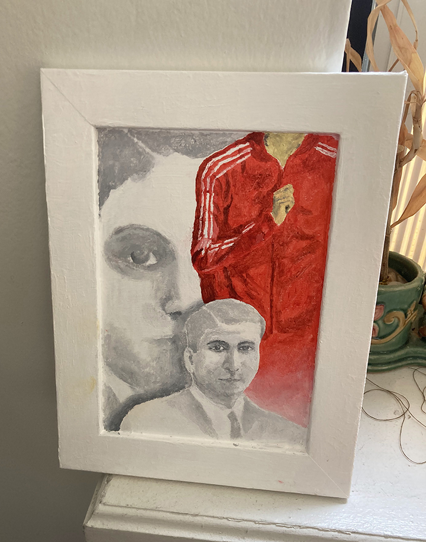
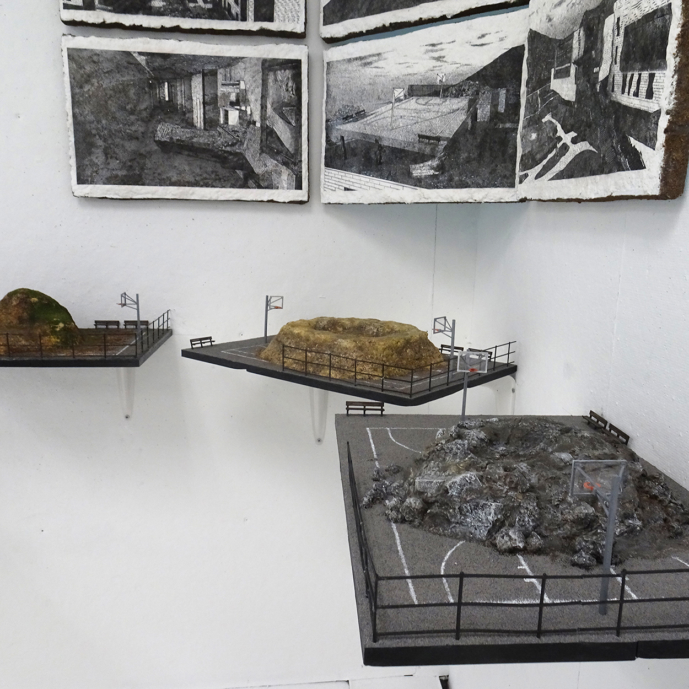
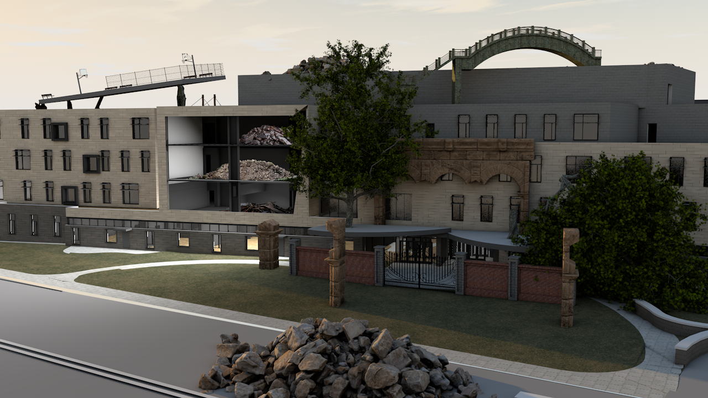
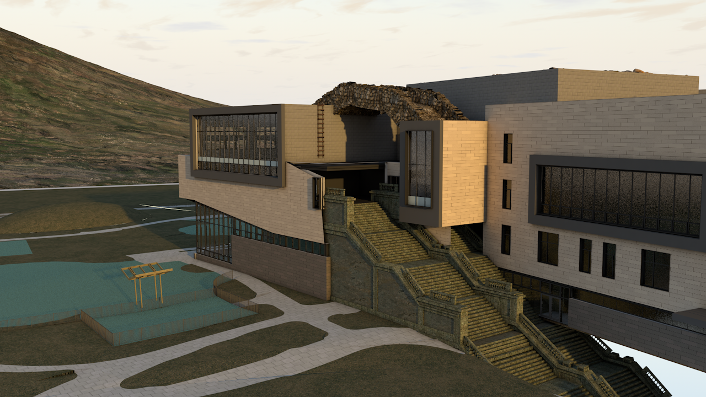
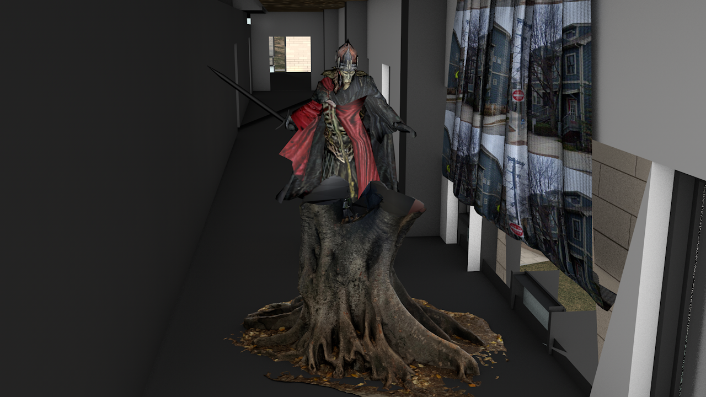

Adrian Tiu
Studio Practice
Below are a few, select pieces from my work ranging from 2021–present, ordered chronologically. My email is adriantiu2@gmail.com if you have any questions. Thank you for visiting this site.
2024, Acrylic paint.
Tobin Render 9, 2022, PLA, Acrylic, faux-grass.
  From top to bottom:
Tobin Render 10
Tobin Render 9
Tobin Render 5
All: 2022, Digital.
Yao Ming, 2021, Shina wood.